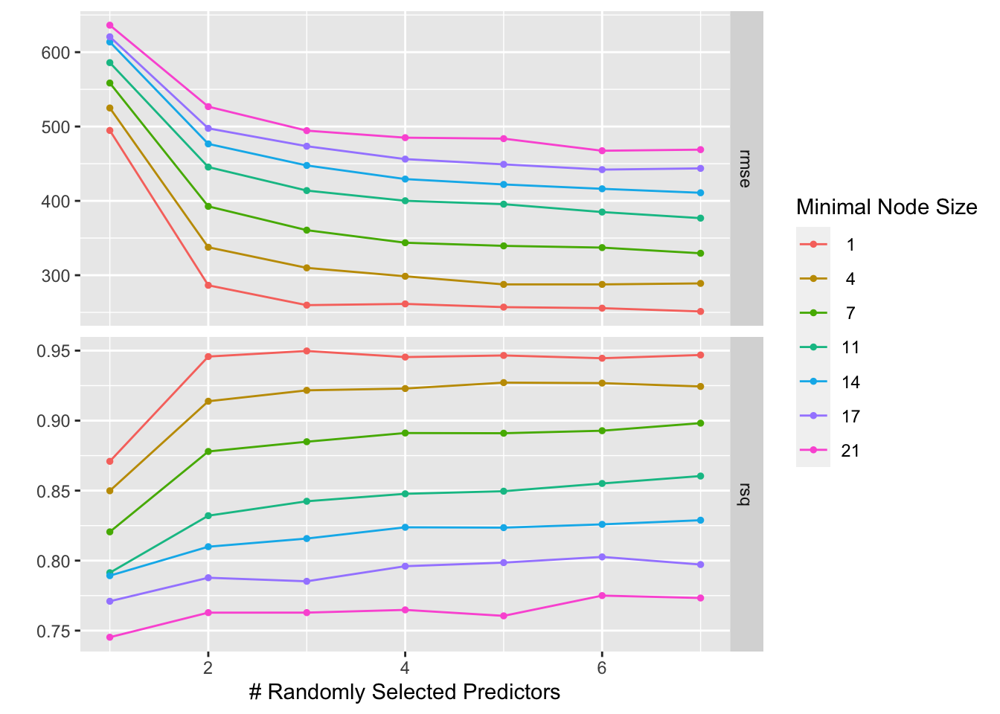

suppressPackageStartupMessages(library(nlmixr2data))
suppressPackageStartupMessages(library(readxl)) #for loading Excel files
suppressPackageStartupMessages(library(skimr)) #for nice visualization of data
suppressPackageStartupMessages(library(here))
suppressPackageStartupMessages(library(readr))
suppressPackageStartupMessages(library(ggplot2))
suppressPackageStartupMessages(library(dplyr))
suppressPackageStartupMessages(library(tidyr))
suppressPackageStartupMessages(library(tidymodels))
suppressPackageStartupMessages(library(corrplot))
suppressPackageStartupMessages(library(recipes))
suppressPackageStartupMessages(library(yardstick))
suppressPackageStartupMessages(library(caret))
suppressPackageStartupMessages(library(ranger))
suppressPackageStartupMessages(library(glmnet))ML Exercise
Assessment - Machine Learning Models 1
Data processing and exploration
Loading needed packages.
#Set seed
# Set value for rndseed
rngseed <- 1234
set.seed(rngseed)
# Reading the RDSfile into a data frame
data <- read_rds("clean_data.rds")
# View the first few rows of the data
head(data)# A tibble: 6 × 7
Y DOSE AGE SEX RACE WT HT
<dbl> <dbl> <dbl> <fct> <fct> <dbl> <dbl>
1 2691. 25 42 1 2 94.3 1.77
2 2639. 25 24 1 2 80.4 1.76
3 2150. 25 31 1 1 71.8 1.81
4 1789. 25 46 2 1 77.4 1.65
5 3126. 25 41 2 2 64.3 1.56
6 2337. 25 27 1 2 74.1 1.83str(data)tibble [120 × 7] (S3: tbl_df/tbl/data.frame)
$ Y : num [1:120] 2691 2639 2150 1789 3126 ...
$ DOSE: num [1:120] 25 25 25 25 25 25 25 25 25 25 ...
$ AGE : num [1:120] 42 24 31 46 41 27 23 20 23 28 ...
$ SEX : Factor w/ 2 levels "1","2": 1 1 1 2 2 1 1 1 1 1 ...
$ RACE: Factor w/ 4 levels "1","2","7","88": 2 2 1 1 2 2 1 4 2 1 ...
$ WT : num [1:120] 94.3 80.4 71.8 77.4 64.3 ...
$ HT : num [1:120] 1.77 1.76 1.81 1.65 1.56 ...MORE PROCESSING
I will look at RCE variable
# table for thr RACE
table(data$RACE)
1 2 7 88
74 36 2 8 I see that 7 and 88 have few observations, then I will combine them into a 3 category
#Mutating RACE to have the 3rd category
levels(data$RACE)[levels(data$RACE) == "7" | levels(data$RACE) == "88"] <- "3"
table(data$RACE)
1 2 3
74 36 10 mutate worked as shown above
Next, let’s make a pairwise correlation plot for the continuous variables. If we were to find any very strong correlations, we might want to remove those.
# Select only continuous variables
data_continuous <- data[, c("DOSE", "AGE", "WT", "HT")]
# Calculate the correlation matrix
correlation_matrix <- cor(data_continuous, use="pairwise.complete.obs")
# Create correlation plot using corrplot
pairw_plot_cor <- corrplot(correlation_matrix, method = "number")some variables are somewhat strongly correlated, nothing seems excessive (e.g., above an absolute value of 0.9). So looks like we won’t have too much of a problem with collinearity.
#FEATURE ENGINEERING
Creating BMI variable, computed from the HT and WT variables. The formula for BMI is weight in kilograms divided by height in meters squared
# Calculating BMI based on WT (kg) and HT (m) variables
data$BMI <- data$WT / (data$HT^2)
head(data)# A tibble: 6 × 8
Y DOSE AGE SEX RACE WT HT BMI
<dbl> <dbl> <dbl> <fct> <fct> <dbl> <dbl> <dbl>
1 2691. 25 42 1 2 94.3 1.77 30.1
2 2639. 25 24 1 2 80.4 1.76 26.0
3 2150. 25 31 1 1 71.8 1.81 21.9
4 1789. 25 46 2 1 77.4 1.65 28.4
5 3126. 25 41 2 2 64.3 1.56 26.4
6 2337. 25 27 1 2 74.1 1.83 22.1We see that BMI category has been successfully created
#MODEL BUILDING We are finally done with our additional processing bits and are ready to fit some models. Specifically, we will explore these 3 models: For the first model, we’ll revisit the one namely a linear model with all predictors. For our second model, we’ll use LASSO regression. For our third model, we’ll do a random forest (RF).
#First fit We’ll start by performing a single fit to the training data, without any CV and model tuning.
#Now I will define the different models
#setting seed
set.seed(rngseed)
# Linear model with all predictors
model1 <- linear_reg() %>%
set_engine("lm") %>%
set_mode("regression")
# LASSO regression model
model2 <- linear_reg(penalty = 0.1, mixture = 1) %>%
set_engine("glmnet") %>%
set_mode("regression")
# Random forest model
model3 <- rand_forest() %>%
set_engine("ranger") %>%
set_mode("regression")#Workflows and Receipes
Now I will create workflows and receipes for the defined above models
set.seed(rngseed)
# Creating a recipe for linear regression
recipe_model1 <- recipe(Y ~ ., data = data)
# Creating a recipe for lasso model
recipe_model2 <- recipe(Y ~ ., data = data) %>%
step_dummy(all_nominal(), -all_outcomes())
######### Creating Work flows for the models#######################
# Linear model workflow
model1_workflow <- workflow() %>%
add_recipe(recipe_model1) %>%
add_model(model1)
# LASSO model workflow
model2_workflow <- workflow() %>%
add_recipe(recipe_model2) %>%
add_model(model2)
# Random forest model workflow
model3_workflow <- workflow() %>%
add_recipe(recipe_model1) %>%
add_model(model3)#Fitting the models
set.seed(rngseed)
# Fitting the models
# Fit the linear model
fit1 <- fit(model1_workflow, data = data)
# Fit the LASSO model
fit2 <- fit(model2_workflow, data = data)
# Fit the random forest model
fit3 <- fit(model3_workflow, data = data)Predictions Now we shall make the predictions for the models
set.seed(rngseed)
#Predictions for model1
pred_model1 <- predict(fit1, new_data = data) %>%
select(.pred)
#Predictions for model2
pred_model2 <- predict(fit2, new_data = data) %>%
select(.pred)
#Predictions for model3
pred_model3 <- predict(fit3, new_data = data) %>%
select(.pred)Root mean square error Calculating the RMSE for each model
set.seed(rngseed)
#Calculating RMSE for model1
RMSE_model1 <- fit1 %>%
predict(data) %>%
bind_cols(data) %>%
metrics(truth = Y, estimate = .pred)
#Calculating RMSE for model2
RMSE_model2 <- fit2 %>%
predict(data) %>%
bind_cols(data) %>%
metrics(truth = Y, estimate = .pred)
#Calculating RMSE for model3
RMSE_model3 <- fit3 %>%
predict(data) %>%
bind_cols(data) %>%
metrics(truth = Y, estimate = .pred)set.seed(rngseed)
# Combine RMSE values for each model into a single table
combined_RMSE <- data.frame(
Model = c("Model 1", "Model 2", "Model 3"),
RMSE = c(RMSE_model1, RMSE_model2, RMSE_model3)
)
# Print the combined table
print(combined_RMSE) Model RMSE..metric RMSE..estimator RMSE..estimate RMSE..metric.1
1 Model 1 rmse standard 571.5953974 rmse
2 Model 2 rsq standard 0.6437203 rsq
3 Model 3 mae standard 443.0651753 mae
RMSE..estimator.1 RMSE..estimate.1 RMSE..metric.2 RMSE..estimator.2
1 standard 571.6503822 rmse standard
2 standard 0.6436542 rsq standard
3 standard 442.3092612 mae standard
RMSE..estimate.2
1 357.6662234
2 0.8972462
3 277.3343011The root mean squared error (RMSE) values for the three models are 571.60, 571.65, and 357.67 units, respectively. Model 3 demonstrates the lowest RMSE, indicating superior predictive performance compared to Models 1 and 2. With its substantially lower RMSE, Model 3 appears to provide more accurate predictions of the outcome variable compared to the other models. Conversely, Models 1 and 2 exhibit higher RMSE values, suggesting a larger average discrepancy between predicted and actual values. Consequently, Model 3 emerges as the preferred choice for its superior predictive accuracy,while further examination may be warranted to discern any meaningful differences between Models 1 and 2.
Visualization of Predicted vs Observed values
set.seed(rngseed)
# Create observed versus predicted plots
model1plot <- ggplot(pred_model1, aes(x = .pred, y = data$Y)) +
geom_point() +
geom_abline(linetype = "dashed", color = "red") +
labs(title = " Observed vs Predicted (Linear Model)", x = "Observed", y = "Predicted")
model1plotmodel2plot <- ggplot(pred_model2, aes(x = .pred, y = data$Y)) +
geom_point() +
geom_abline(linetype = "dashed", color = "blue") +
labs(title = " Observed vs Predicted (LASSO Model)", x = "Observed", y = "Predicted")
model2plot
model3plot <- ggplot(pred_model3, aes(x = .pred, y = data$Y)) +
geom_point() +
geom_abline(linetype = "dashed", color = "green") +
labs(title = " Observed vs Predicted (Random Forest Model)", x = "Observed", y = "Predicted")
model3plotTuning the models We shall tune the Lasso and Random forest
set.seed(rngseed)
#Setting a grid of penalty values correctly
penalty_grid <- grid_regular(penalty(range = c(log10(1E-5), log10(1E2))), levels = 50)
# Adjust the LASSO model specification for tuning
model2_tune <- linear_reg(penalty = tune(), mixture = 1) %>%
set_engine("glmnet") %>%
set_mode("regression")Creating workflow and resampling using the apparent function.
set.seed(rngseed)
# Create workflow
model2_workflow_tune <- workflow() %>%
add_recipe(recipe_model2) %>% # Using already the defined recipe lasso model above
add_model(model2_tune)
# Create an apparent resamples object
apparent_resamples <- apparent(data)Now I will tune the model and autoplot
set.seed(rngseed)
# Tunning the model
model2_tuning <- tune_grid(
object = model2_workflow_tune,
resamples = apparent_resamples,
grid = penalty_grid)
#Look at tuning diagnostics
autoplot(model2_tuning)
RMSE: Generally, as the amount of regularization increases (moving to the right on the x-axis), the RMSE tends to increase. This means that the model is becoming more biased (less flexible) as the penalty term shrinks the coefficients, and it might not be fitting the training data as well.
R-squared: Generally, as the amount of regularization increases, the R-squared value tends to decrease. This is because the model is becoming more biased and fitting the training data less well. However, in some cases, regularization can lead to a higher R-squared on the training data but a lower R-squared on unseen test data (better generalization).
Since the labels for the y-axis are cut off and the specific scales are not visible, it’s difficult to say definitively which value of lambda is the best solution here. However, by looking at the trends in the two curves, you can see that the RMSE starts to increase more rapidly at higher values of lambda, while the R-squared continues to decrease steadily. So, a good starting point for choosing the lambda value might be somewhere in the middle of the x-axis where the RMSE curve begins to rise sharply.
Now I will tune the Random Forest Model
set.seed(rngseed)
# Define the random forest model tune
model3_tune <- rand_forest(trees = 300, mtry = tune(), min_n = tune()) %>%
set_engine("ranger") %>%
set_mode("regression")
# Create a tuning grid
tuning_grid <- grid_regular(
mtry(range = c(1, 7)),
min_n(range = c(1, 21)),
levels = 7
)# Creating the workflow for the random forest
model3_workflow <- workflow() %>%
add_recipe(recipe_model1) %>%
add_model(model3_tune)
# Tune the random forest model
rftune <- tune_grid(
model3_workflow,
resamples = apparent(data),
grid = tuning_grid
)
# Visualizing with autoplot
autoplot(rftune)
Tuning models with CV
Starting with LASSO
#set random seed
set.seed(rngseed)
#create CV resamples
cv_samples <- vfold_cv(data, v = 5, repeats = 5)
# Adjust the workflow for the tunable model
model2_workflow_tune_cv <- workflow() %>%
add_recipe(recipe_model2) %>% # Make sure recipe_lasso is defined correctly
add_model(model2_tune)
# tune the LASSO model with cross-validation using the same workflow as above
model2_tuned_cv <- tune_grid(
object = model2_workflow_tune_cv,
grid = penalty_grid,
resamples=cv_samples
)
# diagnostics of tuning LASSO model
autoplot(model2_tuned_cv)RMSE: As the amount of regularization increases (moving to the right on the x-axis), the RMSE tends to increase. This means that the model is becoming more biased (less flexible) as the penalty term shrinks the coefficients, and it might not be fitting the training data as well. You can see this in the graph by how the rmse curve increases more steeply at higher values of lambda. R-squared: As the amount of regularization increases, the R-squared value tends to decrease. This is because the model is becoming more biased and fitting the training data less well. However, in some cases, regularization can lead to a higher R-squared on the training data but a lower R-squared on unseen test data (better generalization). In the graph, the rsq curve shows a steady decrease as lambda increases.
Now I will tune the Random Forest with CV
# Define the random forest model with tunable parameters
model3_tune_cv <- rand_forest(trees = 300, mtry = tune(), min_n = tune()) %>%
set_engine("ranger", seed = rngseed) %>%
set_mode("regression")
# Create a tuning grid
tuning_grid <- grid_regular(
mtry(range = c(1, 7)),
min_n(range = c(1, 21)),
levels = 7
)
# Create workflow
model3_workflow_cv <- workflow() %>%
add_recipe(recipe_model1) %>%
add_model(model3_tune_cv)
# Tune the random forest model
model3_tune_cv <- tune_grid(
model3_workflow_cv,
resamples = cv_samples,
grid = tuning_grid
)
# Plot the tuning results
autoplot(model3_tune_cv)RMSE: As the number of randomly selected predictors increases (moving to the right on the x-axis), the rmse tends to decrease. This suggests that the model performance generally improves as you include more predictors in the training process. This is likely because more predictors provide more information to the model, which can help it capture the underlying relationships in the data. R-squared: Generally, as the number of randomly selected predictors increases, the R-squared value tends to increase. This is because the model is able to fit the training data better with more predictors. However, it’s important to note that high r-squared on the training data doesn’t necessarily translate to good performance on unseen data. In some cases, including too many predictors can lead to overfitting, where the model memorizes the training data but doesn’t generalize well to unseen examples.